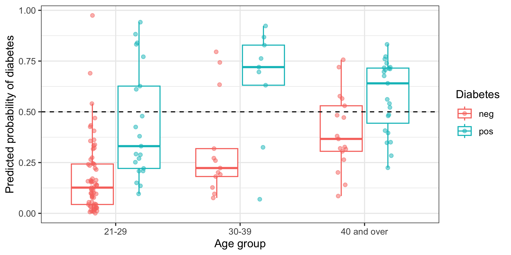
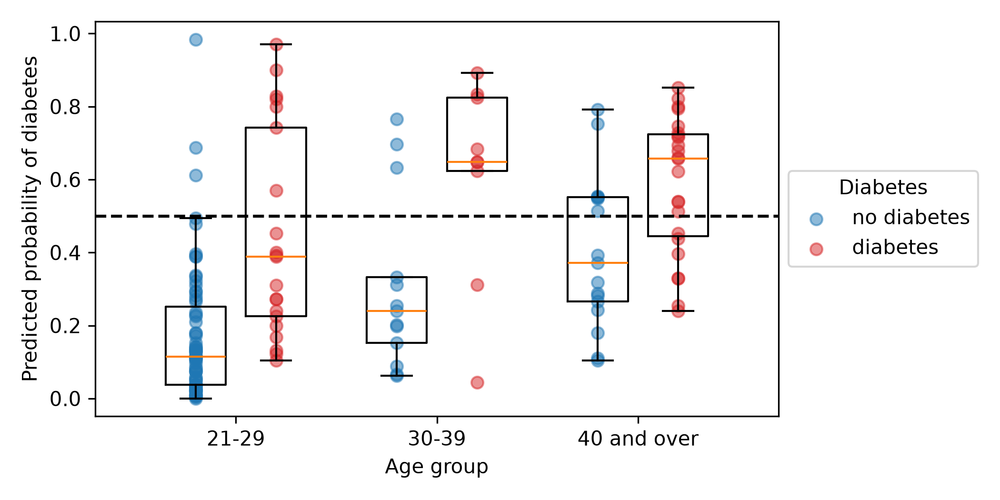

library(tidyverse)
library(tidymodels)
theme_set(theme_bw()) # white background for every plot
options(pillar.sigfig = 3) # show three significant figures in tablesExercise 9.4 — For whom is the model worst?
ImportantA suggested addition, not part of the original module
This exercise has no page in the original version of the module. It asks a question Exercises 9.1 to 9.3 leave open: they explained the model as a whole and one patient at a time, but not whether it works equally well for different groups of patients. Accept, rewrite or remove it; nothing else depends on it.
A single test AUC describes the model for the 150 test patients as a whole. The model can still serve some groups of patients much worse than others, and the overall number will not show it. Here we split the test patients by age and by BMI and compare.
Theory: performance by subgroup; sensitivity and specificity within a group; why a model that ranks a group well can still miss most of its cases; why small groups give noisy numbers.
NoteThe plots are for looking at
The code for every plot is folded away just above it, in case you are curious, and all of it is in the code file linked at the top of each tab. You are not expected to write it yourself.
Download the R code from this chapter — every cell below, in page order, including the code for every plot, with the blanks left for you to fill in. Open it in Positron beside the page and run it a chunk at a time.
Packages and data
The same data (data/diabetes.csv), split and random forest as Exercises 9.1 to 9.3, with the predicted probability and the predicted class (threshold 0.5) for each test patient.
diabetes <- read_csv("data/diabetes.csv") |>
select(pregnant, glucose, mass, pedigree, age, diabetes) |>
filter(glucose > 0, mass > 0) |> # remove the impossible zeros
mutate(diabetes = factor(diabetes, levels = c("neg", "pos")))
test_rows <- seq(1, nrow(diabetes), by = 5) # every fifth person is held back
train <- diabetes[-test_rows, ]
test <- diabetes[test_rows, ]
set.seed(1)
rf_fit <- rand_forest(trees = 500) |>
set_engine("ranger") |>
set_mode("classification") |>
fit(diabetes ~ ., data = train)
test_preds <- predict(rf_fit, new_data = test, type = "prob") |>
bind_cols(predict(rf_fit, new_data = test)) |> # adds .pred_class
bind_cols(test)Part 1 — Performance by age group
Put the test patients into three age groups, and count them first:
test_preds <- test_preds |>
mutate(age_group = cut(age, breaks = c(20, 29, 39, Inf),
labels = c("21-29", "30-39", "40 and over")))
test_preds |>
group_by(age_group) |>
summarise(patients = n(), with_diabetes = sum(diabetes == "pos"))#> # A tibble: 3 × 3
#> age_group patients with_diabetes
#> <fct> <int> <int>
#> 1 21-29 88 21
#> 2 30-39 22 9
#> 3 40 and over 40 23Now three measures in each group: the AUC (how well the model ranks the patients of that group), and at the threshold of 0.5 the sensitivity (the share of the people with diabetes it flags) and the specificity (the share of the people without diabetes it clears). yardstick’s functions work on grouped data, one row per group; event_level = "second" because pos is the second level.
auc_by_age <- test_preds |>
group_by(age_group) |>
roc_auc(truth = diabetes, .pred_pos, event_level = "second")
sens_by_age <- test_preds |>
group_by(age_group) |>
sens(truth = diabetes, estimate = .pred_class, event_level = "second")
spec_by_age <- test_preds |>
group_by(age_group) |>
spec(truth = diabetes, estimate = .pred_class, event_level = "second")
bind_rows(auc_by_age, sens_by_age, spec_by_age) |>
select(age_group, .metric, .estimate) |>
pivot_wider(names_from = .metric, values_from = .estimate)#> # A tibble: 3 × 4
#> age_group roc_auc sens spec
#> <fct> <dbl> <dbl> <dbl>
#> 1 21-29 0.817 0.333 0.955
#> 2 30-39 0.795 0.778 0.769
#> 3 40 and over 0.744 0.652 0.706The model ranks the youngest patients best (AUC 0.817) but, at the threshold of 0.5, flags only 7 of the 21 young people with diabetes (sensitivity 0.333), against 7 of 9 aged 30-39 and 15 of 23 aged 40 and over. The older groups pay for their higher sensitivity with a lower specificity.
The plot shows why: the predicted probabilities for each age group, split by whether the patient really has diabetes.
Code for this plot (optional)
test_preds |>
ggplot(aes(x = age_group, y = .pred_pos, colour = diabetes)) +
geom_boxplot(outlier.shape = NA) +
geom_point(position = position_jitterdodge(jitter.width = 0.15, seed = 1), alpha = 0.5) +
geom_hline(yintercept = 0.5, linetype = "dashed") +
labs(x = "Age group", y = "Predicted probability of diabetes", colour = "Diabetes")
Question! The youngest group has the best AUC and the lowest sensitivity. How can both be true?
The AUC only asks whether, within the group, people with diabetes get higher probabilities than people without. They do. But young patients’ probabilities are low across the board, because the model has learned that diabetes is less common in the young, so most of the young people with diabetes still sit below 0.5. A model can rank a group well and still miss most of its cases at a fixed threshold.
ImportantLearning points
- One overall AUC can hide large differences between groups of patients.
- Ranking within a group (AUC) and catching cases at a threshold (sensitivity) are different questions.
- Always report how many patients, and how many with the outcome, each group’s numbers rest on.
Part 2 — By BMI, and how far to trust a small group
Your turn. Do the same with two BMI groups: under 30, and 30 or over (the usual cut-off for obesity).
# Replace every ______ below, then run this cell.
test_preds <- test_preds |>
mutate(bmi_group = if_else(mass < ______, "under 30", "30 and over"))
test_preds |>
group_by(bmi_group) |>
summarise(patients = n(), with_diabetes = sum(diabetes == "pos"))
bind_rows(
test_preds |> group_by(bmi_group) |> roc_auc(truth = diabetes, .pred_pos, event_level = "second"),
test_preds |> group_by(bmi_group) |> sens(truth = diabetes, estimate = .pred_class, event_level = "second"),
test_preds |> group_by(______) |> spec(truth = diabetes, estimate = .pred_class, event_level = "second")
) |>
select(bmi_group, .metric, .estimate) |>
pivot_wider(names_from = .metric, values_from = .estimate)How far can we trust these numbers? The BMI-under-30 group has only 9 patients with diabetes, and so has the 30-39 age group. A sensitivity of 0.333 there is 3 patients out of 9: one more caught would make it 0.444, one fewer 0.222.
A rough rule: a sensitivity resting on \(k\) patients with the outcome moves by \(1/k\) for each patient caught or missed, and its uncertainty is of the order of \(\sqrt{p(1-p)/k}\). With \(k = 9\) and \(p = 0.33\) that is about \(\pm 0.16\) for one standard error. Differences between small groups have to be large before they mean anything, and the test set of a teaching dataset is too small to settle questions of fairness; a real audit needs far more patients in each group.
Question! Suppose the youngest group’s low sensitivity holds up in a large data set. What could you do about it: change the model, change the threshold for that group, or add a predictor? What would each of these cost?
ImportantLearning points
- Split the test set by clinically meaningful groups and report the numbers of patients, and of patients with the outcome, beside every metric.
- With a handful of patients with the outcome, one patient more or less moves sensitivity a long way; treat differences between small groups as hypotheses, not findings.
Download the Python code from this chapter — every cell below, in page order, including the code for every plot, with the blanks left for you to fill in. Open it in Positron beside the page and run it a cell at a time.
Packages and data
import pandas as pd
import numpy as np
import matplotlib.pyplot as plt
from sklearn.ensemble import RandomForestClassifier
from sklearn.metrics import roc_auc_scoreThe same data (data/diabetes.csv), split and random forest as Exercises 9.1 to 9.3, with the predicted probability and the predicted class (threshold 0.5) for each test patient.
diabetes = pd.read_csv("data/diabetes.csv")
diabetes = diabetes[["pregnant", "glucose", "mass", "pedigree", "age", "diabetes"]]
diabetes = diabetes[(diabetes["glucose"] > 0) & (diabetes["mass"] > 0)] # remove the impossible zeros
diabetes = diabetes.reset_index(drop=True)
diabetes["diabetes"] = (diabetes["diabetes"] == "pos").astype(int) # 1 = pos, 0 = neg
is_test = diabetes.index % 5 == 0 # every fifth person is held back
train = diabetes[~is_test]
test = diabetes[is_test]
predictors = ["pregnant", "glucose", "mass", "pedigree", "age"]
rf = RandomForestClassifier(n_estimators=500, random_state=1)
rf = rf.fit(train[predictors], train["diabetes"])
test_preds = test.copy()
test_preds["prob"] = rf.predict_proba(test[predictors])[:, 1] # probability of diabetes
test_preds["pred"] = rf.predict(test[predictors]) # predicted class, threshold 0.5Part 1 — Performance by age group
Put the test patients into three age groups, and count them first:
test_preds["age_group"] = pd.cut(test_preds["age"], bins=[20, 29, 39, np.inf],
labels=["21-29", "30-39", "40 and over"])
test_preds.groupby("age_group", observed=False).agg(
patients=("diabetes", "size"),
with_diabetes=("diabetes", "sum"))#> patients with_diabetes
#> age_group
#> 21-29 88 21
#> 30-39 22 9
#> 40 and over 40 23Now three measures in each group: the AUC (how well the model ranks the patients of that group), and at the threshold of 0.5 the sensitivity (the share of the people with diabetes it flags) and the specificity (the share of the people without diabetes it clears). The loop takes one age group at a time.
rows = []
for group, patients in test_preds.groupby("age_group", observed=False):
has_diabetes = patients["diabetes"] == 1
flagged = patients["pred"] == 1
rows.append({"age_group": group,
"roc_auc": roc_auc_score(patients["diabetes"], patients["prob"]),
"sens": (has_diabetes & flagged).sum() / has_diabetes.sum(),
"spec": (~has_diabetes & ~flagged).sum() / (~has_diabetes).sum()})
by_age = pd.DataFrame(rows)
by_age.round(3)#> age_group roc_auc sens spec
#> 0 21-29 0.818 0.333 0.955
#> 1 30-39 0.774 0.778 0.769
#> 2 40 and over 0.737 0.696 0.588The model ranks the youngest patients best (AUC 0.818) but, at the threshold of 0.5, flags only 7 of the 21 young people with diabetes (sensitivity 0.333), against 7 of 9 aged 30-39 and 16 of 23 aged 40 and over. The older groups pay for their higher sensitivity with a lower specificity.
The plot shows why: the predicted probabilities for each age group, split by whether the patient really has diabetes.
Code for this plot (optional)
groups = ["21-29", "30-39", "40 and over"]
fig, ax = plt.subplots(figsize=(7, 3.5))
for shift, outcome, colour in [(-0.2, 0, "tab:blue"), (0.2, 1, "tab:red")]:
for i, group in enumerate(groups):
values = test_preds.loc[(test_preds["age_group"] == group) &
(test_preds["diabetes"] == outcome), "prob"]
ax.boxplot(values, positions=[i + shift], widths=0.3, showfliers=False)
ax.scatter(np.full(len(values), i + shift), values, color=colour, alpha=0.5,
label=("diabetes" if outcome == 1 else "no diabetes") if i == 0 else None)
ax.axhline(0.5, color="black", linestyle="--")
ax.set_xticks(range(len(groups)))
ax.set_xticklabels(groups)
ax.set_xlabel("Age group")
ax.set_ylabel("Predicted probability of diabetes")
ax.legend(title="Diabetes", loc="center left", bbox_to_anchor=(1, 0.5))
fig.tight_layout()
plt.show()
Question! The youngest group has the best AUC and the lowest sensitivity. How can both be true?
The AUC only asks whether, within the group, people with diabetes get higher probabilities than people without. They do. But young patients’ probabilities are low across the board, because the model has learned that diabetes is less common in the young, so most of the young people with diabetes still sit below 0.5. A model can rank a group well and still miss most of its cases at a fixed threshold.
ImportantLearning points
- One overall AUC can hide large differences between groups of patients.
- Ranking within a group (AUC) and catching cases at a threshold (sensitivity) are different questions.
- Always report how many patients, and how many with the outcome, each group’s numbers rest on.
Part 2 — By BMI, and how far to trust a small group
Your turn. Do the same with two BMI groups: under 30, and 30 or over (the usual cut-off for obesity).
# Replace every ______ below, then run this cell.
test_preds["bmi_group"] = np.where(test_preds["mass"] < ______, "under 30", "30 and over")
rows = []
for group, patients in test_preds.groupby(______):
has_diabetes = patients["diabetes"] == 1
flagged = patients["pred"] == 1
rows.append({"bmi_group": group,
"patients": len(patients),
"with_diabetes": has_diabetes.sum(),
"roc_auc": roc_auc_score(patients["diabetes"], patients["prob"]),
"sens": (has_diabetes & flagged).sum() / has_diabetes.sum(),
"spec": (~has_diabetes & ~flagged).sum() / (~has_diabetes).sum()})
pd.DataFrame(rows).round(3)How far can we trust these numbers? The BMI-under-30 group has only 9 patients with diabetes, and so has the 30-39 age group. A sensitivity of 0.333 there is 3 patients out of 9: one more caught would make it 0.444, one fewer 0.222.
A rough rule: a sensitivity resting on \(k\) patients with the outcome moves by \(1/k\) for each patient caught or missed, and its uncertainty is of the order of \(\sqrt{p(1-p)/k}\). With \(k = 9\) and \(p = 0.33\) that is about \(\pm 0.16\) for one standard error. Differences between small groups have to be large before they mean anything, and the test set of a teaching dataset is too small to settle questions of fairness; a real audit needs far more patients in each group.
Question! Suppose the youngest group’s low sensitivity holds up in a large data set. What could you do about it: change the model, change the threshold for that group, or add a predictor? What would each of these cost?
ImportantLearning points
- Split the test set by clinically meaningful groups and report the numbers of patients, and of patients with the outcome, beside every metric.
- With a handful of patients with the outcome, one patient more or less moves sensitivity a long way; treat differences between small groups as hypotheses, not findings.
Stretch
NoteStretch — a threshold per group?
In the youngest group, find the threshold that gives a sensitivity of at least 0.7 on the test patients (try 0.2, 0.3, 0.4). How many more of the young people without diabetes are now flagged? Why would you need a separate validation set to choose that threshold honestly?